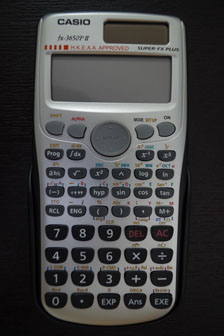
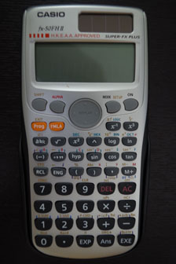
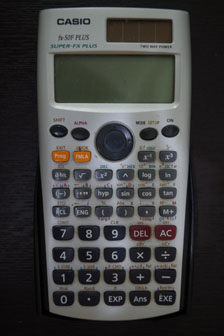

CASIO fx-50FH、fx-3650P II、fx-50FH II及50F PLUS
|  |  |  |
| fx-3650P II | fx-50FH II | fx-50F PLUS |
CASIO fx-50FH / 50F PLUS為一部程式計算機，採用S.V.P.A.M的操作方法 ，除了fx-50FH不能顯示23內置公式，兩部機的功能及用法完全相同。注意fx-50FH被香港考評局接納為准用計算機， 可在香港中學文憑試中使用(但fX-50F PLUS卻不可以)。與另一部舊程式計算機fx-3650P比較，較特別的是它有23個內置程式及40個科學常數，與舊款的fx-50F的內置程式完全相同，相信亦是這個原因所以這個型號的計算機才會稱為fx-50FH / fx-50F PLUS。美中不足的是它沒有好像fx-3650P的微積分功能，其它計算功能大致上與fx-3650P相似，主要的分別如下:
1. fx50FH /fx50F PLUS程式容量增加至680 bytes，還加入了高階電腦語言基本的結構性控制指令(Control Structure Command)，例如: While ~ WhileEnd、If ~ Then ~ Else ~ IfEnd等指令，因此透過學習編寫fx-50F PLUS程式，其實亦可以認識到一些基礎電腦語言的特點。
2. fx50FH顯示屏較大一點，但第一行顯示算式的字體卻縮小了一點，因為第一行可以顯示16字符，比fx-3650P更多，對閱讀輸入的算式會較清楚及方便。而顯示屏亦可以因應個人需要調節對比對度(Contrast)，當調節至較高對比度時，即使是較低的角度也可以清楚觀看顯示屏的內容。
3. fx50FH / 50F PLUS內部使用了15個位進行算(fx-3650P使用12個位)，準確度方便有明顯增加。
4. fx-50FH / fx-50F PLUS在回歸分析中加入了AB指數回歸計算。
5. 不少在fx-3650P計算錯誤問題及操作上缺點，在fx-50FH已有不少修正或改良。
有關兩部計算機的詳細分別，請參看fx-3650P與fx-50FH功能比較。
CASIO fx-50FH II及fx-3650P II計算機被香港考評局接納為准用計算機， 由2014年開始可在香港中學文憑試中使用。
CASIO fx-50FH II是fx-50FH新版，功能及用法上可以說是完全一樣，除了將隱乘的計算先後順序改了，對於在除數時容易誤解順序問題，計算機會自動產生括號減少錯誤的機會(程式除外)，例如:計算 2÷2(2+2)時，計算機會將算式自動變為2÷(2(2+2))。fx-50FH/fx-50F PLUS的程式絶大多數都可直接在fx-50FH II中使用。
CASIO fx-3650 II計算機功能、程式及用法各方面都與fx-50FH II相同，除了以下三方面不同:
一、fx-3650 II沒有fx-50FH II 的40個科學常數內置的23個公式功能。
二、fx-3650 II程式容量只有390 bytes，fx-50FH II則有680 bytes。
三、fx-3650 II有微積分計算功能，而 fx-50FH II沒有。
同樣 fx-50FH/fx-50F PLUS的程式絶大多數都可直接在fx-3650P II中使用。
綜合來說，fx-3650P II、fx-50FH及fx-50FH II都是有不錯的文憑試程式計算機，各方面比舊款fx-3650P有明顯的改進。
有關CASIO 四部文憑試計算機(fx-3650P、fx-50FH、fx-3650P II及fx-50FH II的詳細比較，請參看CASIO fx-3650P II、fx-50FH II及舊型號比較。
1. CASIO fx-50FH 及 fx-50F PLUS 程式集
2. CASIO fx-50FH/50F PLUS及fx-3650P功能比較
6. fx-50FH II自我檢測功能 (新)
7. fx-3650P II自我檢測功能 (新)
9. F50FH常見問題
10. 編程式小技巧
11. FX50FH使用小貼士
12. WebCal 會考計數機論壇